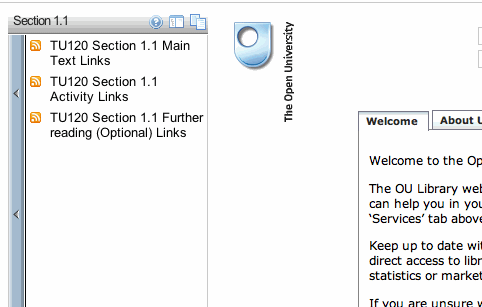
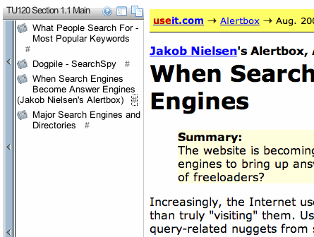
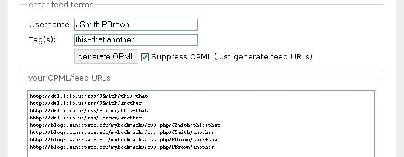
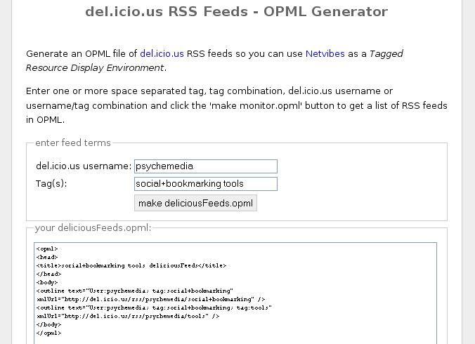
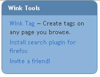
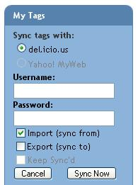

May 24, 2007
Workshop: Social Bookmarking, sort of...
Yesterday afternoon, I gave a 'partial attention' workshop on Social Bookmarking, sort of... for the OU's e-learning community (eLC), a growing network of people from all over the OU with a particular interest in elearning related technologies.
The eLC, under the guidance of Chris Pegler, has events booked in every few weeks, often wrapped around an informal networking lunch, today being no exception. I got the afternoon session, following a great session in the morning by Adam Joinson on "privacy" (I'll try and post some notes on that talk in the next few days). Whilst there was some crossover between attendees of the two sessions, there were also a few differences too, which I took to be a sign that the events are providing a good balance in accommodating the wide variety of interests and information needs of the members of the community.
Anyway, a copy of my slides (such as they are) are available on slideshare and links to some of the sites I talked about are available on this H2O Social Bookmarking - sort of... playlist :
I didn't get a chance to annotate the slides before uploading them, but the gist of the story I tried to tell was this...
When I started using delicious as a bookmarking tool, I used it largely for collecting links to web pages that I thought I might want to revisit at a later stage. As delicious grew, and my personal link collection grew, it became increasingly useful as a resource discovery tool. In particular, I'm thinking here of opportunities for discovery via pivot searching about links, people and tags.
Over time, I've started to think that social bookmarking as an approach generalises to the generation of collections of resources by agents. Resources are also labelled with meaningful keys - tags, labels, keywords, metadata - that can be used to index resources within the collection (as well as being used to key sub-collections).
Agents may be people, groups, or even algorithms - live resource collections (Okay - this is all a bit flaky still; particularly claiming a saved search - or filtered set of feeds - produces a collection in the sense that a person collecting a set of links and tagging them in the same way is. Or a collection of links in a course unit or H2O playlist is in some way similar to an evolving bookmark collection. But I'm working on it as a spectrum thing relating to the ways in which resource collections can be generated...)
Anyway, the next step in my personal use of social bookmarking tools was to start exploring ways of using subsets of the links I had collected by pulling them out of delicious using RSS feeds (because of course we all know by now that we ignore RSS at OUr peril ;-). Exemplar uses are embedding live created lists of links in course materials (login as guest), or using them to define custom search engines such as delisearch (or more recently, OpenLearn unit search hubs).
RSS can also be used to pipe content more generally around the web, of course. Something I articulated to myself for the first time on Tuesday, whilst in conversation about how to promote RSS feed uptake, was that for sites I visit for new content, the feed icon brings a smile to my face because I know it means I never need to visit the site again - I can get the content sent where I want to read it :-)
(I also realised that even if you have the best RSS feed in the world, if the person you're trying to convince to use it does not subscribe to any other feeds, you are likely to do them a service by giving them the overhead of yet another place to go to consume content - feeds make sense when you aggregate lots of them in the same place, particuarly when they update over different periods.)
Dashboards like my OUseful Pageflakes dashboard or Netvibes are particularly good surfaces for providing glanceable displays that cover a wide variety of independent information sources.
As well as creating lists to web page links, bookmarking tools can also be used to collate lists of richer resources - locations on google maps, video clips on youTube, for example, slideshows on slideshare.net or documents on scribd.com (I didn't really get scribd until I saw it after playing with the Open Repository Online - I know which way I'd rather consume documents now!) (Check out the playlist for the actual links.)

For further info about future eLC events, check out the eLC website, or keep an eye on the OUseful calendar.
Subscribe to the OUseful calendar: 

November 09, 2006
Making the Most of Links from Online Course Materials to External Websites
At the request of the TU120 Course Team, I spent half an hour a couple of days ago extracting by hand the external links from the online course materials for the first week of Beyond Google and popping them into delicious.
Although the materials are generated from XML source files (and so automated link extraction is trivial) I did it by hand partly to see what observations I could make about what sorts of information might be available to support the automated tagging and description of automatically extracted links.
A secondary aim was to see what thoughts occurred to me regarding the potential reuse of linkrolls/link collections, and the extent to which we could:
a) provide linkrolls as part of an added value "product" to students;
b) exploit linkrolls within a course as an additional navigation aid (for revision, or catchup);
c) use linkrolls as a feed source for a course related customised search engine.
Anyway - here are the TU120 Week 1 links, and here are a few things that came to mind as I was bookmarking them:
1) Tagging is an issue:: there are various sorts of tags we can use to mark up these external links:
I focussed just on organisational/course administration links for this exercise, using:
- section and subsection numbers (1, 1.1, 1.2 etc;) but not subsubsection numbers;
- an activity tag for when a link was referenced in the context of an activity;
- maintext when a link appeared in the main text of a section; and
- furtherReading when a link appeared as an optional/further reading link.
I also tagged all the links as courseLink to show they were provided as part of the course materials.
My choice of tags was in part determined by the sorts of info that could be trivially automatically extracted from the course XML, because this sort of process should be automated if we are to offer course related link bundles more formally.
I didn't any 'semantic' tags; (sub)sections of the course are not semantically tagged either (even the XML markup is biassed towards presentation related tags, as you may guess if you've seen the OUschema that the OpenLearn course materials are being release as on the Labspace site).
It did occur to me that it may be possible to use services like Yahoo's content analysis/tag extraction service to offer tag suggestions for our content, but I haven't tried this yet. (There's another experiment for me to try with some OpenLearn content.. It would also be good if we could get visitors to the OpenLearn and Labspace sites tagging material? ;-)
It may also be interesting to use delicious (or other social bookmarking system) tag recommendations for a particular URL to help automate tag selection for particular URLs?
Ideally, though, external link bookmarks should be semantically tagged in a similar way to the context they appear in in the course materials/the section of the course content they came from. Semantic relations between links and the context they appear in within the course materials would then be preserved in a far more robust way that using section numbers: using tags like 1.1 are brittle, particularly if the content moves. Using tags like example+cluster+searchengine are far more robust, especially if that sort of sense can be extracted from the course material automatically.
2) Delicious displays results in reverse chronological order. I put the links into delcious in the order in which they appeared in the course materials, so viewing them gives a reverse presentation order view; the same is true when you pull links out of delicious via a web feed; I don't know if this can be switched to chronological order? It's easy enough to write a script that would act as a relay and reverse the order of links, I guess, so there's yet another thig for the to do list...
3) The links can be made available in several ways
- exported as bookmarks/favourites into a browser (for example, using nested folders of bookmarks organised by section, topic, or category), or viewed as live bookmarks;
- displayed in a webtop like PageFlakes or Netvibes, or viewed in Grazr; for example, here are several ways of using an OPML bundle to provide link navigation from a Grazr widget.

The navigation on the left actually shows different ways the links may be organised; note that when you get to the links, they are in reverse order, as discussed above.
Here are a couple more Grazr views:


4) It's easy enough getting the links out of delicious and putting them into a Google custom search engine like this TU120 search engine (week 1 links only, at the moment):


searchfeedr will also let you narrow the search down to 15 sites at a time, which would be ok for a section search; here's an example search over external links from TU120 section 1.1:

This exercise raised many more questions for me than it answered. For example,
a) how should we go about tagging link resources? One way might be to get students to add the semantic tags, and we could just provide architectural/administrative tagging? ;-)
b) user scenarios: how might students use linkrolls? How should we organise, distribute, promote, embed and/or link to external link rolls, if at all?
That databases and other resource collections have value in their own right is well known.
As we move towards more and more online courses, with course authors presumably continuing to deep link into third party sites (even if we are only supposed to link to the top level of a domain ;-) I think its worth asking how the knowledge locked up in linkrolls/link collections can be unlocked, as well as exploring ways in which further value can be added.
PS having put the links into delicious, I also realised I should have used Simpy. Simpy offers private groups, which means we can keep our IP locked up, even if we do use a third party social bookmarking service ;-)
PPS for newish readers to the blog who are interested in issues relating to the use of social bookmarking in formal education, you may be interested in reading Towards a Managed Social Bookmarking Environment in Higher Education.
May 05, 2006
Importing OPML into IE7
I just tried to import the structured OPML bookmark feed feed I posted about last night into IE7 (via the Import Feed option:
and hit a problem - no feeds were imported.
It seems that IE7 requires the type attribute of the relevant outline elements to be set to rss (as in feed="rss") for the import to work.
So here's yet another version of the Social Bookmarks Structured OPML Feed Generator, and here's what the example from the previous post in this series looks like when it's imported into IE7:
May 04, 2006
(Social) Bookmark Interoperability
Some time ago I posted on the topic of Social Bookmarking Interoperability, something I've had cause to look at again several times recently: firstly on the issue of synching bookmarks between users on two different social bookmarking systems (Simpy and delicious); secondly on managing browser bookmark collections, and synching between different browsers and social bookmarking systems; thirdly on the display of bookmark collections in folder based displays.
All these issues got me thinking about some sort of bookmark managing system that would let me organise my bookmarks across and between browsers and social bookmarking systems, within folders and live folders (i.e. tags) and so on - a windows explorer like view, if you like, within which is could move, syhnch and organise bookmarks to my heart's desire.
So - can I find the raw ingredients for such a tool?
Well, synching between browser bookmark formats looks to be supported by several tools and scripts that are floating around the web. xbel_parse is part of a Linux command line tool collection that supports the conversion of Netscape, IE, Opera and links bookmarks to and from XBEL (the XML Bookmark Exchange Language).
In order to achieve the same thing in a pre-built desktop client, BookmarkBridge looks a good bet:
a small, easy to use, multi-platform, GUI-based utility that allows the user to share bookmarks between all their browsers. The user runs it periodically to synchronize between the browsers.

Many of the social bookmarking systems now support import/export from/to the major browser bookmark formats (although I heard tales of problems importing into delicious) and so there is a clunky way there for synching bookmarks across systems for those systems that do not allow an import via API calls (simpy for example will happily import delicious bookmarks).
I was going to say that I haven't yet seen a client like BookMarkBridge, for example, that will automatically pull bookmarks down form a social bookmarking system and upload them to another (or import them into a browser) but then I stumbled across Sitebar that looks like it may support this sort of functionality, or at least, it supports borwser/XBEL bookmark formats as well as RSS and OPML. The Sitebar code and server are available as open source so I think I really need to go and check it out... From the Sitebar version 3.3rc1. release notes:
"Export Bookmarks" reworked and enhanced with feed possibility. SiteBar can now produce feeds in many formats and with many options. Following formats were added: Atom, RDF, RSS, OPML, XBEL. Command "Export Bookmarks" was added to "Maintain Trees" and allows export of all accessible trees. New command "Export Bookmarks Settings" allows to specify some details about feeds. "Import Bookmarks" reworked, import from following formats added Atom, RSS, OPML, RDF, XBEL. XBEL is now the default export/import format for SiteBar.
Hmmm...
Anyway, one thing that occurred to me that I haven't done for a long time was to think about the various ways I could use live bookmarks to display my delicious bookmarks, for example, in my browser. This has limited utility though - for example, I can't build up folder hierarchies (I don't think) using live bookmarks on the toolbar or in the bookmarks sidebar.


However, feedreaders that support OPML do let you have folder directories, don't they?;-) Like Sage for instance...
Which means that if I construct an appropriate OPML feed, I can import a list of 'folder organised' bookmarks from a social bookmarks feed...
Where to find such a feed, though...? Hmmm - I feel a tweak to the Social Bookmarks OPML Feed Generator coming on. Here's a first attempt - Social Bookmarks OPML feed generator with directory structure:

(You'll notice the additional structure can be suppressed via the checkbox. The profiles are numbered as they are becuase I'd previously created, and deleted, a couple of feed profiles. It's easy enough to let a user name a feed profile, but I'd need to change the interface around a bit (I'm running out of room!) In the meantime, folders can be renamed in the bookmark manager.
Anyway, if I now save the OPML and import it into Sage, this is what I get:

What I'm wondering now is, should I also support additional structure, for example organising user folders where there are several users in a profile, or social bookmarking system folders where several users are defined?
Any comments? If so, add a comment from the main page or calendar page copy of this post, or mail me...
PS just because, here are a couple of ways of getting bookmarks into multiple social bookmarking systems at the same time. Firstly, the OnlyWire service and bookmarklet lets you set up a profile containing several social bookmarking system accounts and post to them all with a single bookmarklet. Secondly, there's this Multipost Bookmarklet Tool which lets you select a set of social bookmarking systems and generate a bookmarklet that will post to them all. The source is available for this tool - maybe I should find a way of integrating it into my tool?
And finally - for anyone into social bookmarking interoperability, I recommend you sign up to the BIF - Bookmark Interchange Format - Mailing List. Details of where to find it, along with a bit of background, can be found here.
April 07, 2006
Social Bookmarking Workshop at OU Learning and Teaching Conference
I'm presenting a social bookmarking workshop - Seven ways of using social bookmarks - at the OU's Learning and Teaching Conference from 13:45 to 14:45 on Wednesday, April 26th (session C8).
My 'official' abstract for the session is:
Social bookmarking systems are web-based services that allow users to bookmark all manner of web based resources, 'tag' those resources with meaningful keywords, and share their bookmarks with others. In this workshop, we'll look at how to use social bookmarking systems, how to discover resources bookmarked by others, and how to use RSS to pull links to bookmarked resources into arbitrary web pages. As for the rest of the 7 claimed uses? You'll just have to turn up and see.
but I'm still not sure what format the workshop will take. Depending on uptake, we may have a hands on session, at least in part.
If you're a member of the OU community, and still haven't registered for the conference, why not register online now.
February 27, 2006
Delicious Reading Lists Made Easy
I hate it when an idea takes shape, 'cos it means I can't sleep... The thing that's been keeping me up tonight is the idea of delicious reading lists...(If you need a briefing on reading lists, here's where it started.) Here's my first attempt at making 'em easy...
Fist off, we need a way of bookmarking feeds to del.cio.us. One way to do this is to bookmark whatever's pointed to by the first <link rel='alternate' /> on a page, and tag it with, for example, usr:feed. (I have saked the delicious guys, via the developer mailing list, if a system:feed tag is on the cards).
If you need just such a bookmark, here's one I think works in Firefox: + feed 2 del.icio.us
The next thing we need to do is add an OPML feed generator link to a delicious page if there is at least one feed on it (e.g. at least one thing tagged usr:feed).
I've knocked up a del.icio.us OPML feed Greasemonkey script to do this, but it's a bit clunky at the moment. For example, it'll only work if you're looking at a page of the form http://del.icio.us/someThing/someTag, because it pulls out the feed for the page (e.g. http://del.icio.us/rss/someThing/someTag) and adds +usr:feed to it...
Here's how I provide a link to the generated OPML file:
If the page doesn't point to a page that relates specifically to tagged items (such as a user's del.icio.us 'homepage') be warned that (at the moment) the script won't work (if there's enough interest, I may try to fix this).
Also, if there's nothing tagged 'usr:feed' on the page, the feed link is not added. Furthermore, the feed link will only make use of items tagged usr:feed in the OPML file (that's all that's passed to the feed generator).
So for example, in the above screenshot, the feed link was generated because of this:
Here's an example of clicking the OPML link from my delicious feed on a tag that currently has two feeds in it:
Btw - I hope I'm allowed to make use of the OPML-TM gif?! Mail me if not...
February 26, 2006
Delicious Reading List Bookmarklet
Another quick post picking up again on Danny Ayer's del.icio.us Reading Lists post, where he gives a recipe for creating an OPML reading list from a set of feeds (rather than pages or sites) tagged in delicious, this time to mention a DeliOPML bookmarklet (only tested in Firefox).
Just drag the link onto your bookmark toolbar, visit a delicious page that contains a list of feeds (e.g. Danny Ayer's example was at danja/readinglist+tech) and click on the bookmarklet. You'll then be taken to an OPML feed of the page...
Here's an example of clicking the OPML link from my delicious feed on a tag that currently has two feeds in it:
(Hmm - I notice that not all the feeds are represented in the list...but they aren't in the example from Danny's page either. I haven't looked at the XSLT, but perhaps there's a switch in there? or at W3C?) Update: it seems that the XSLT islimiting the number of links returned in the OPML file.
The bookmarklet works by looking for <link rel='alternate'/> tags, then pulls the address of the first one and uses it as the target for Danny's XSLT.
PS I've just uploaded a test Greasemonkey script that appends an OPML link to the bottom of del.icio.us links page that will generate an OPML feed from the RSS feed generated for that page. Here it is: delicious OPML feed Greasemonkey script.
This will generate a feed for all the links whether or not they point to an RSS feed, which isn;t ideal. I have a fix in mind for this, which I';ll post along with a supporting bookmarklet for saving feeds to delicious tomorrow.
Then it'll be time to give OPML a rest for a bit, and I can get back to posting random thoughts and doodles!
February 24, 2006
Delicious OPML Link Generator
Picking up on a couple of recent posts (specifically, Danny Ayers on delicious reading lists via Johnt at LibraryClips) here is a URL/link generator that will generate the link you need when supplied with a delicious username and tag combination: delicious OPML feed URL generator.
The delicious SearchLink code is now working a little better, too: delicious Search Links.
February 20, 2006
Social Bookmarking Aggregated Posting
If you maintain accounts on several different social bookmarking services that you try to keep in synch, you'll know that keeping each account in line with the other can be a pain.
OnlyWire: The Only BookMarklet You'll Ever Need! seeks to get around this problem by providing you with a single bookmarklet that will post the bookmarked page to multiple social bookmarking sites, acting in effect as a posting aggregator.
To use the service, you need to configure your account with your identities on whichever social bookmarking services you want the link posted to, which I think will cause some people to worry about privacy issues.
Onlywire has a minimal API too, though I think I'd prefer something a little more elaborate, like the ability to choose which systems the bookmark was supposed to be sent to.
Update: here are a couple more, not dissimilar, services that I've just come across:
- Socialiszer - "The Socializer allows you to easily submit a link to several social bookmarking systems. Instead of having a link to each social bookmarking website, you have a single link to all of them!"
- Multiplost bookmarklet generator tool
January 09, 2006
The Utility of Social Bookmarking Environments
I'm just back from a quick dog walk, where I had a moment or two's reflection on what social bookmarking environments are good for.
On and off over the last few months, I've exchanged occasional mailing list posts and blog comments with Todd@Big IDEA on the matter of having different personal profiles within a social bookmarking environment. Todd's been looking at the for ScuttlEdu, most recently here: One account, multiple profiles.
Related to this is the idea of private bookmarks, whether for individuals or groups, which allow you to partition your bookmarks into public and private spaces.
Now, one of the oft quoted arguments against private groups especially within social bookmarking systems is that by splitting the population numbers you get less added value from the sociality of the environment.
And this is partly true. (I say partly because I think there is value in subject specific groupings where you have a chance of building up expert communities of practice.)
For most benefit in a social software system, you need a critical mass of active participants, and it can be dangerous to split your community.
However - and this is where my reflection about my personal assumptions regarding social bookmarking systems comes in - I think that as well as providing a social, community utility, with added value from sharing bookmarks and resoucres, many social bookmarking systems have a utility in their own right as a personal personal bookmarking environment.
Thios is particularly true of systems like CiteULike and Connotea where you get added value in the automation of academic reference collection.
And because many of us are lazy, it's convenient to keep all our bookmarks in one place (as well as taking up the free automation offers!).
So I might, for example, predominantly use a social bookmarking system in a purely selfish way, to the extent that I am largely bookmarking for myself.
But because it costs me nothing to share, I'm happy to.
Now, one of the ways I'm coming at the use of social bookmarking in education is that bookmarking in and of itslef can be a useful thing to get into the habit of, whether or not its social.
If there is a criticial mass of active community members, then you may start to get social benefits.
But that isn't to say you won't also get a personal benefit from keeping track of things you personally found interesting/useful even in the absence of beneficisal social effects.
So what am I saying - that one of my core assumptions is that bookmarking is a good thing to do. That if you do it in a social way, there may be a social benefit. But if there isn't - so what? You still have a useful personal resource...
Tag Entry Syntax
I just twigged a *huge* assumption I'd made with respect to the Social Bookmarking OPML/RSS Feed Generator last night, specifally the format used (by default) to enter tags and tag combinations.
Because I tend to use delicious more than any other social bookmarking system, I'd opted for the delicious tag entry format - single word, space separated tags (the same for specifying multiple users).
But different systems use different tag entry formats, as pointed out by this 37 Signals post on just that subject: Tag formats: Can't we all just get along? - Signal vs. Noise (by 37signals)
I don't know if there is a tagging syntax analysis out there anywhere looking at social bookmarking systems in particular (if you know of one, please add the link as a comment to this post:-), so here's a quick summary for the systems covered by the OPML generator:
- del.icio.us - single word, space separated, case insensitive;
- simpy - single word(?), comma separated, case insensitive;
- Connotea - space or comma separated; multi-word tags enclosed in "quotes";
- Scuttle - comma separated;
- CiteULike -
The following compounding (?) structures are also used to join words (and perhaps there are other conventions too? Please add them as a comment...):
- hyphen: compound-tag
- underscore: compound_tag
- perdio/dot: compound.tag
- simple concatenation: compoundtag
- Upper Camel Case: CompoundTag
- lower Camel Case: compoundTag
So - that's something else on the to do list, then - a preference setting for the preferred style of tag entry...
(You can see what I'm working towards, perhaps - a single interface onto a whole variety of social bookmarking systems ;-)
January 08, 2006
OPML Generator With Customisable Feeds
Following a few comments regarding the Social Bookmarking Feeds OPML Generator, I've updated the page so that it now also supports CiteULike, Scuttle and customised feeds PS and will also generate lists of plain RSS feed URLs without an OPML wrapper.
The 'custom feed' option allows you to define the path to a social bookmarking service and mark it as conforming to some of the current standards, particulary the open source bookmarking systems.
PS I've also just added a switch (though code is horribly clunky...:-( that allows you to turn off the OPML wrapper and just generate a list of RSS feed URLs.

I'm well aware that feeds for groups -which are supported by several of the systems - is not available, but this is on my 2-3 week horizon to-do list.
January 07, 2006
More on SOcial Bookmark Synching...
A few more late night thoughts on social bookmark synching, as I take time out from an end-of-course assignment marking marathon :-(
The immediate setting comes from a couple of posts I just stumbled across (Todd on Social bookmarking: one account, multiple profiles, Stephen on some forthcoming RSS synching services coming to Edu-RSS) and my first look at the del.icio.us daily blog (you can get the idea of what it's about from here, but basically it's a scheduled post from delicious to a blogging service of your links for the day...)
So - What's the Story (Morning Glory;-)?
The problem is this - how to synch from one social bookmarking system to another?
Let's refine that a little - how can we synch a subset of bookmarks, corresponding to a (set of) tag(s) from one bookmarking system to another on a regualr basis?
Now it seems to me that there are two obvious ways of getting the bookmarks from system A into system B:
1) system B subscribes to a feed from system A, and polls it on a regular basis;
2) system A pushes links to system B on a regular basis (for example, using a system like del.icio.us' daily blog, with filters attached).
At the current time, I don't think that any social bookmarking systems will let you subscribe to a feed (RSS in the single case, OPML for an RSS bundle), or that del.ico.us allows you to push anything other than all of the day's links to a blog. But with either of these features in place, I think it would be another step or two along the road to a striaghtforward mashup of a distributed, synched social bookmarking system...
I'm not too sure, admittedly, about how happy Joshua (or the Yahoo! paymasters!;-) would be about pushing links on a regular basis into a rival bookmarking system, though...
However, I do think it would be interesting if something like Simpy, or developers for something like Scuttle, were to implement a bloglike API that could spoof a real blogging system's API and act as the target for a del.ico.us daily blog post (I wonder if rival social bookmarking system URLs would be blocked if they tried to do this?).
If a social bookmarking were so enabled, then it would be possible to make us of the del.icio.us daily blog feature.
Assuming that del.ico.us only continues to push all a user's daily postings, rather than allowing the daily blog to be filtered by tag or tag combination, for example, it would also be useful if the blogSpoof API had some filters attached so that only posts relating to certain tags or tag combinations were passed through...
January 06, 2006
Synching Social Bookmarking Systems
How effective is social bookmark synching? Earlier this week I
posted about the synching services offered by Simpy, Spurl and Wink.
(NB Scuttle will also synch with del.icio.us). Here are a few more thoughts, particularly insofar as they relate to distributed social bookmarking.
First of all, the synching service appears to be a one off - I click the button and the bookmarks are copied across to the service from del.icio.us (typically...).
Now I can understand this mode of operation when I want to sync a service with my browser favourites (not that I use those anymore...) - there's no way that the service can easily grab any bookmarks I've made since the last sync operation from my browser.
But that's not true for the online bookmarking services. Once I've set up a synch-link, it would be handy if I could set up a daily top-up, for example, whereby the service I'm synching into subscribes to my personal RSS feed at the service I'm synching from and grabs all the latest additions and changes.
Why would this be useful? Well, it would let me bookmark in a mixed way, for example using a del.icio.us account for home bookmarking, CiteULike or Connotea for work related links, and so on, whilst still maintaining an meta-archive of all my links.
Suprglu does this for me with my various blog feeds, and I think it would be handy to have a related service for my bookmarks...
I could quite imagine a star based system architecture, whereby one or two major systems will synch from large numbers of minor social bookmarking systems, and perhaps also synch back to them (e.g. I think Wink will update del.icio.us with any (or is that just particularly tagged?) bookmarks I make in Wink).
If the major social bookmarking systems/hubs then synched between each other, we could have quite a fluid(?!), automated transport of links across the systems.
Putting filters in place, so as to only synch certain tags or tag combinations, would allow users to maintain different profiles of themselves on different systems. Being able to set synch frequency, or support pings (both incoming and outgoing), would also be useful.
I've argued before that individuals maintaining more than one social bookmarking persona is not necessarily a bad thing - for example, I desire different tools when making personal bookmarks as compared to academic, work or research related bookmarks; I require different search tools for these different aspects of my online behavior; when recommendation systems start mining my bookmarks I may want to cultivate different personas, and so on.
The growth of lensing applications such as Squidoo or H2O Playlist and personal/customised search applications such as ScoopGO! (do they want Yahoo! to buy them, do you think!?), or Rollyo, as well as the people-powered search engines, suggests that aggregation and synching tools will be useful for those of us who don't just adopt whatever service I use first because it came via my browser's default homepage/bandwidth provides portal.
PS As to what other services should be synched to - Connotea would be handy for me, along with CiteULike which I haven't really used yet, but which is near the top of my 'to play with' list...
January 05, 2006
Social Bookmarking Systems OPML Feed Generator
Following the previous couple of posts on an OPML generating web page application for collating the RSS feeds for the Simpy and del.icio.us social bookmarking systems, I have now tidied up the code, added Connotea to the mix, and included support for generating feeds that cover several systems at once.

Please feel free to try out this new version of my Social Bookmarking Systems OPML Feed Generator.
All comments appreciated, especially bug reports, suggestions for other social bookmarking systems to include, and details about how you've used the generated OPML feeds/which online services or desktop applications you've used them with, etc.
OPML Generator now includes Simpy...
Following up on yesterday's post about del.icio.us OPML Generator, I have just uploaded a new OPML generator page that will generate an OPML listing for Simpy feeds, as well as for del.icio.us.
This isn't fully checked yet (of course!), and the code is cobbled together rather than properly desiegned (in fact, the code is really horrible and kludged), so it may contain a few 'features'... but as lunchtime is over, I have no more time to look at this today.
Any problems, please leave me a comment (or send me a working version!).
January 04, 2006
del.icio.us OPML Generator
One of the things I hope to look at in earnest this year are tools for managing the display of link resources, such as my social bookmarks via their RSS feeds.
This 'work' is an obvious extension to the MyOpenLibrary odoodles I made last year.
Importing del.icio.us links into services such as Netvibes (which I identified as one possibly appropriate environment) can be simplified if the links are made available as bundles via an appropriate RSS/syndication feed. These bundles will contain a list of related links, as for example characterised by some combination of username and/or tag(s). Collections of bundles (i.e. collections of RSS feeds) can then be combined in an OPML file.
As a short term measure, I have popped up a crude OPML generator for producing collections of links to del.icio.us RSS feeds to del.icio.us OPML generator.
This is how it looks:

At the moment, you have to copy and paste the OPML into a text file, which can then be saved and uploaded to wherever. I'll work on a more satisfactory way of saving this info if I get a chance.
January 03, 2006
Bookmark Synching, Bookmark Searching...
Just a few days in to the New Year, and my year has already been made by the discovery of several neat, though possibly longstanding!, interoperability features on a couple of social bookmarking systems that I have been rather neglecting...
In a recent post ("Distributed Socail Bookmarking") I doodled a few thoughts about social bookmarking interoperability.
That post led, in part, to me joining a Social software group on Simpy, with the intention, in part, that we could use that group to track some of the work that is going on in the area of social software interoperability (distributed social software?).
But that's not what this post is about...(it's just for your reference, dear reader, to try and get you to have a look at Simpy if you haven't been over there for a bit :-)
No - what this post is about is the fun I've been having over the last hour synching my del.icio.us bookmarks with other social bookmarking systems, in particular:
I've mentioned before , in the context of it as a people-powered search engine ("Search the Web - Powered by People"). That is, the top search results from a query relate to sites that have been recommneded (in the sense that they have been bookmarked, and possibly 'starred') by Wink subscribers.
One of the features that appealed to me at first was the del.icio.us import facility, which meant I could import all the sites I have bookmarked there, and make them available for search.
One thing I had assumed - but which does not appear to be possible on Wink - was that I would be able to search my bookmarked sites. This would be really handy for rediscovery of resources, of course, as well as providing a Rollyo type service that I've dreamed about here (and implicitly(?! - but not so you'd notice!) here, too).
However, I don't think Wink let's you search your own bookmarked sites, in the same way that Zniff doesn't.
Zniff??? This was doing the rounds some time ago in the blogosphere (e.g. on ) as a human powered search engine (this time powered by Spurl).
What's interesting about Zniff, however, is that you can use it on Spurl to search just your Spurled resources...
And what makes it even better is that Spurl supports the import - and two-way synching (I think - though I have yet to check it out in practice) - of bookmarks with del.icio.us.
Another service that supports synching with del.icio.us (and they're looking for more third party sites to synch with if anyone has any suggestions...) is Simpy. For a long time, Simpy has provided one of the best search interfaces in a social bookmarking system, and now I realise I can use it to search through my bookmarked resources...hmm, I wonder, can I use it to just search those sites I have bookmarked to a particular group, I wonder...? (Does anyone know of a good "Simpy search" tutorial, per chance?)
With Yahoo!'s puchase of del.icio.us (which I really can't be bothered to link to again...) del.icio.us powered searches - perhaps through Yahoo!'s MyWeb 2.0 service (or even Y!Q context sensitive search, somehow (perhaps tag-context sensitive?)) - or Yahoo! powered del.icio.us search - will possibly leapfrog some of the competition...
December 20, 2005
People-powered Search
Over the last few weeks, I have joined more social bookmarking services that I can keep of without the support of a social bookmarking tool!;-), so in part I rely on email reminders and new feature announcements to keep me going back to the services I don't use on a regular basis.
Today's reminder was from Wink, a "people powered" search engine. They describe themselves thus:
Wink is a search engine that integrates tag results from multiple sources such as del.icio.us, Digg, Yahoo MyWeb (and we're adding more). It gives you the freshest information on the web by serving up the most relevant tagged links for your search. We crawl and index tags from all over the web, and serve them up with web results, for a combination of freshness and accuracy. We also include other user-contributed content, such as answers from Wikipedia that you'll find under the Wink Answers tag, which is added by people like you. We also provide Google search, because tag coverage is still thin in some areas, and while tag results are really interesting, we know what you want sometimes is best found on Google.You can also "tag" your results directly in Wink. A tag is similar to a bookmark, but it allows you also annotate any link with words that you associate with that link. For instance, if you tagged www.kodak.com, you could notate it with the terms "camera", "photography" and "film". Your tags are stored in your "My Page", so if you want to then go look at all the sites you use for photography, www.kodak.com and any others that you have tagged will be there.
The news item that caught my eye today was this:
"Sync your del.icio.us bookmarks to help you with your searches and make sure any favorites you mark at Wink are stored to your del.icio.us bookmarks."
So I gave it a go and sync'd my bookmarks from del.icio.us and into Wink easily enough, though I haven't tried the other way yet...
This relates very much to an earlier post on Social Bookmarking Interoperability, of course, although here it is one service (Wink) taking on the burden of importing and exporting info to/from another (del.icio.us, and presumably in the near future Yahoo!MyWeb2.0).
The Wink approach is not totally novel, of course - several other social bookmarking sevices allow you to do something similar. However, I wonder how many people, once they start using a particular social bookmarking service will make the effort to migrate to another? (The same is true in banking - people are loathe to change bank accounts from one provider to another..!) However, maintaining a sync'ed presence on several social bookmarking sites does mean that on those occasion when your main provider goes down (as del.icio.us did for me yesterday) you are still able to store bookmarks online.
One question that keeps coming to mind is how OUseful searching with peer, friend or cohort identified sites will be. Whilst not a walled garden, there may still be a tendency for groups to only see the sites they know about. This cuts both ways of course - by searching relevant sites you only get relevant info (hopefully!) BUT you may miss out on other, newer sites. Unless they get picked up by the sites you do accommodate and you add them to the fold.
The idea of users and groups building a lens to focus attention/search on user selected (i.e. high quality?!) sites related to a particular topic is not new of course (Squidoo's lenses couldn't be more explicitly named, the H20 Playlists perform a similar function, Rollyo's user defined meta-search engine allows you to search within a predefined list of sites on Yahoo! (hmmmm...;-) and Google is implying it's RSS reader is some sort of attention or content focussing device - http://www.google.com/reader/lens/).
Questions of course arise as to how best to manage to a course related lens, reminiscent of those raised in the context of social bookmarking in managed environments, though I think instructor control over a lens, e.g. where is it used to provide a way in to resources that are relevant to a particular topic and/or the delivery of particular,pre-specified learning outcomes (ergghhh..).
One thing I can see emerging within online courses is a "bounded search" element. If you look in any textbook, you will see standard features - academic content, exercise, lists of further reading etc. The structure is tried, tested and proven. In an online setting, it's not too hard to imagine constrained 'Further Search', where a tool such as Rollyo allows an instructor to identify a set of sites that a student can use to explore/search about a topic in a relatively focussed way.
This is one area where academic librarians may well be able to contribute to the ongoing support of elearning courses, although it is far more focussed in style than a resource such as ROUTES which just identifies high level, course relevant resources, rather than drilling down to sites that are particularly relevant to a particual topicof sub-topic within a course.
[Note to self and Lazyweb - build a search aggregator that performs a search over sites listed for a particular course in ROUTES, or over a particular set of sites listed in an RSS feed (such as a del.icio.us feed).]
Wink is still in closed Beta, although as they are trying to grow virally they are starting to roll out an 'Invite a Friend' service (mail me if you want an invite).

The Wink idea is close to that of Yahoo!'s MwWeb 2.0 (read more about it in this blog post, in this FAQ or in this post from Search Engine Watch), so it was interesting to note that a Wink sync to Yahoo!Myweb is also listed, though it's greyed out at the moment...

With Yahoo!'s purchase of del.icio.us, it will be interesting to see the extent to which people will become part of the search machine...!
December 15, 2005
Scoping Socially Bookmarked Resources Posted to a Group
In a social bookmarking system that supports groups, such as Simpy or Connotea, it is possible for a user to bookmark and tag a resource and commit it to the group. Just for the record, how should we scope the resource in such a case? (By scope, I mean under what views should we be able to see the resource.)
For sake of argument, let us imagine that user U is in group G, and tags a resource R with tag T1.
Under what conditions should we be able to lookup the resource?
For convenience, I shall use an implied URL with explicit argument passing inspired by the one used in IBM's Dogear social bookmarking service, where for example we identify tags, users, groups and resources explicitly using the arguments tag, group, user and resource respectively.
Using the variables X and Y as part of a request is to be regarded as making a query on the tags, groups, or users and returning satisficing results within X.
The distinguished term whatever=E should be read as 'for all whatevers Y that exist, run this query with whatever=Y and aggregate the results'. An additional term - submittedBy - is required to identify which user submitted a resource to a particular group.
The following list describes a 'could offer' categorisation, rather a recommendation of what the scope should or must be. Note that some of the queries may not be desirable, or even useful!
Resource Listings:
- A list of resources bookmarked to the group (e.g. %PATH%?resource=X&group=G)
- A list of resources bookmarked with a particular tag (e.g. %PATH%?resource=X&tag=T)
- A list of resources bookmarked by a particular user (e.g. %PATH%?resource=X&user=U)
- A list of resources bookmarked to the group with a particular tag (e.g. %PATH%?resource=X&group=G&tag=T)
- A list of resources bookmarked by a particular user with a particular tag (e.g. %PATH%?resource=X&user=U&tag=T)
- A list of resources bookmarked by a particular user to a particular group (e.g. %PATH%?resource=X&submittedBy=U&group=G)
- In some cases, it may be interesting to compare the results of the previous query with a list of resources bookmarked by a particular user that have also be submitted to particular group (e.g. %PATH%?resource=X&user=U&group=G)
- A list of resources bookmarked by a particular user with a particular tag to a particular group (e.g. %PATH%?resource=X&submittedBy=U&tag=T&group=G)
- In some cases, it may be interesting to compare the results of the previous query with a list of resources bookmarked by a particular user with a particular tag that have also be submitted to particular group (e.g. %PATH%?resource=X&user=U&tag=T&group=G)
- A list of resources submitted by a particular user to any group (e.g. %PATH%?resource=X&submittedBy=U)
Who bookmarked this resource?
- Which groups have bookmarked this resource (e.g. %PATH%?resource=R&group=X)?
- Which users have bookmarked this resource (e.g. %PATH%?resource=R&user=X)?
How is this resource tagged?
- How has this resource been tagged (e.g. %PATH%?resource=R&tag=X)?
- How has this resource been tagged by a particular user (e.g. %PATH%?resource=R&user=U&tag=X)?
- How has this resource been tagged by a particular group (e.g. %PATH%?resource=R&group=G&tag=X)?
- How has this resource been tagged by a particular user in a particular group (e.g. %PATH%?resource=R&user=U&group=G&tag=X)?
Who is active within a group?
- Who has posted resources to a group (e.g. %PATH%?resource=E&group=G&submittedBy=X)?
- Which groups has a user posted to (e.g. %PATH%?resource=E&group=X&submittedBy=U)?
- Which groups has a user posted a particular resource to (e.g. %PATH%?resource=R&group=X&submittedBy=U)?
- Which users have posted a particular resource to a particular group (e.g. %PATH%?resource=R&group=G&submittedBy=X)?
Who might be worth inviting to the group?
- Who has posted a resource that is also posted within a particular group (e.g. %PATH%?resource=E&group=G&user=X)? Note the results of this query need to be compared to the subscribers of the group (e.g. with an additional term &!submittedBy=X).
Several questions come to mind from this exercise:
- What happens if multiple users post the same resource to a particular group? Do they both get some 'credit' for contributing the resource to the group?
- Should a user be prevented from trying to post a resource to a group where the resource is already listed?
- Should a user in some way inherit resources posted to groups that the user is a member of?
- If a user does post a resource to a group that already lists that resource, how should the user be notified?
In measuring the relevance of a group to a particular user, do we also need to support a term that captures information resources that a user has bookmarked having had it brought to their attention as a result of seeing it in the group, personalisedBy for example. This is an active form of taking an interest in the resource, as opposed to bubbling up resources to a personal resource collection by virtue of inheriting the resource from a group a user is a member of.
We can then ask further questions along the lines of:
- Which users have personalised a particular resource added to a particular group (e.g. %PATH%?resource=R&group=G&personalisedBy=X)?
- Which users have personalised resources tagged in a particular way (e.g. %PATH%?resource=E&tag=T&personalisedBy=X)?
- Which resources in a particular group have been personalised (e.g. %PATH%?resource=X&group=G&personalisedBy=E)?
Personalisation can equally apply to the bookmarking of a resource from seeing it in a listing of resources identified through a tag or user search. By mining personalisedBy and submittedBy data, there is ample opportunity for a social bookmarking system used in an enterprise, for example, to add value by identifying users who should perhaps be introduced to each other on the basis of shared interests. That is, the mining of social bookmarks within an enterprise for unfulfilled or unrecognised relationships is potentially valuable in knowledge management terms.
For example:
- if we have two users U1 and U2, who tag similar resources (with or without similar tags) independently of each other, should the system effect an introduction for them? (This is one of the ways users themselves seek out potential relationships with a social bookmarking environment?
- if we have two users U1 and U2, who use similar tags (bookmarking the same or different resources) independently of each other, should the system effect an introduction for them?
Related to the notion of personalisation of bookmarks that appear in a group a user is a member of is the question: should users be notified whenever there is a new posting to a group they are a member of: a) if they have not already got a personal copy of that resource; or b) if they have a personal copy of that resource but did not see fit to post it to the group.
A follow on question then arises: if two users in the same group bookmark the same resource, perhaps even with the same tag and neither user posts the resource to the group, should a recommendation be made to them that they do post the resource to the group? This recommendation is likely to be even more compelling if the tag used to describe the resource is also a tag used heavily within the group.
More generally, if a user who is a member of a group bookmarks a resource with a tag that is used within the group, but does not submit the resource to the group, can the user be regarded as keeping a secret from the rest of the group.
November 25, 2005
Distributed Social Bookmarking
Over the last few weeks I've chatted to several people who run social bookmarking applications about the potential for using such systems in a managed environment.
One of the main discussion points has been on the topic of how splitting a userbase into discrete non-sharing groups will potentially weaken the usefulness of the system. I am not so sure - but this may be because the scale I think of is the scale of courses the OU runs (500-1000 students), which is typically an order of magnitude larger than the numbers of students on a particular course in a traditional university.
Related to this is the question of whether additional benefits can be accrued by allowing different social bookmarking installations to co-operate in a distributed social bookmarking environment.
So what might such a system look like? I do not anticipate answering this question in this post, but hopefully I'll be able to identify some of the issues...
Distributed social bookmarking
Several scenarios immediately suggest themselves to me:
- Sharing between different users or different groups defined within a single social bookmarking system;
- Sharing bookmarks between different installations of the same environment. For example, I could quite easily imagine different academic research groups in the same organisation installing their own version of Connotea, and at some later date wanting to share information across those installations whilst retaining them all as independent installations;
- Sharing bookmarks between different applications, for example between del.icio.us and Connotea. An example of this scenario may be an academic researcher who maintains their own social bookmarking account to provide continuity as they more from post to post, institution to institution, and yet would like to share this resource with the institutional social bookmarking service at their host instituion. Another example might be ad hoc groups that form across social bookmarking applications, e.g. amongst attendees at a workshop or collaborators on a particular project.
This latter example - of being able to form ad hoc groups within, between and across social bookmarking systems, and freely share and search resources amongst the group members - would seem to provide an excellent test case for three aspects if interoperability in the distributed social bookmarking environment mentioned above.
To make the idea more concrete, imagine the following scenario: five partners are involved in an international project. Each partner has access to their own social bookmarking environment which each is keen to continue using. Two of the partners are at the same institution, using the same system (a local installation of Connotea, for example), one is using a local installation of Connotea at another institution, one uses the public NPG hosted version of Connotea and one uses del.icio.us. In order to both protect confidentiality of certain personal bookmarks, and minimise the number of irrelevant links shared between group members, there is a suggestion that an ad hoc private group is set-up across the individual bookmarking systems.
Discuss...
Social Bookmarking Interoperability
With an increasing number of social bookmarking systems now available, to what extent would it be useful if it were possible to share bookmarks across these systems?
If social bookmarking systems are to become loosely coupled components in a distributed virtual learning environment (VLE), then conforming to common interface standards would allow different systems to be swapped in an out of such an environment without breaking other components.
One particular question I'd like to raise in this post - and to which I expect to return quite frequently as I work through and follow the technical issues - is whether or not there is any benefit in standardising some elements of social bookmarking applications.
What I am particularly interested in it terms of payoff is:
a) the ability to swap different social bookmarking systems in and out of a hybrid environment (e.g. a VLE or social software suite containig different applications - blogs, wikis, social bookmarking etc.);
b) the ability to create a distributed social bookmarking service.
So what elements might we consider standardising?
There are several that immediately come to mind:
- URL structure for referring to user tags
- RSS structure, for syndicating linkrolls;
- the structure of tag groups;
- the structure of user groups;
- open APIs;
- bookmarklets.
I'm not going to focus on all these issues in this post, but I would like to look at the first two. If you run a social bookmarking service, please feel free to chip in with comments and corrections. If I had access to a public wiki, I'd actually post there, because I think this topic would benefit from a community discussion, but for now I'll stick with the blog. I also think this sort of discussion could usefully add to the excellent comparative work done on social bookmarking by Torsten Rox.
I'm also going to limit myself in this post to comparing just two social bookmarking services - del.icio.us and Connotea. This will let me try and work out some just what sorts of comparisons I want to make and how I'm going to make them. If I can sort some sort of methodology out, (and find some time somewhere) perhaps I'll work on this as a proper research project...:-)
URL structure
Let's look at some examples, first:
del.icio.us navigation:
http://del.icio.us/{rss/}[tag/ OR username/ OR url/][tag {+tag} ? URL]
where [] denotes a required element and {} denotes an optional element. Emphasized elements are placeholders. ? denotes context sensitive.
For example,
- Reference by user: del.icio.us/psychemedia/
- Reference by tag: del.icio.us/tag/socialbookmarking
- Reference by user and tag: del.icio.us/psychemedia/socialbookmarking
- Reference by two tags: del.icio.us/tag/socialbookmarking+folksonomy
- Reference by URL: del.icio.us/url/7e16126ee5fe4f320852b731206c2eac
Connotea navigation:
http://www.connotea/{rss/}[tag/ OR name/ OR uri/][tag{+tag} ? username ? URI]{?tag/tag{+tag}}
For example,
- Reference by user: www.connotea.org/user/ben
- Reference by tag:
- Reference by user and tag: www.connotea.org/user/ben/tag/connotea
- Reference by two tags: www.connotea.org/tag/socialbookmarking+folksonomy
- Reference by URI:www.connotea.org/uri/7e16126ee5fe4f320852b731206c2eac
Comparison of del.icio.us and Connotea URLs>
Reference by tag is handled the same way in both services: $DOMAIN$/tag/tag{+tag}
Reference by user is handled differently: del.icio.us goes straight to the username ($DOMAIN$/username) whereas Connotea interposes a user path element ($DOMAIN$/user/username).
Reference by URI/URL differs in the pathname only ($DOMAIN$/url/ in del.icio.us, $DOMAIN$/uri in Connotea).
What was interesting - at least for the single URI/URL bookmark comparison I made - was the the encoding of the same page (Seven Ways of Using Social Bookmarking - ./005136.html) resulted in the same encoded reference (7e16126ee5fe4f320852b731206c2eac).
Reference by use and tag is in my opinion better managed in del.icio.us ($DOMAIN$/username/tag) than Connotea ($DOMAIN$/user/username/tag/tag).
The differences between URL naming schemes is minor, and if consistency were really necessary could be addressed using URL rewrites.
Finally, both services provide an RSS feed by the simple insertion of an rss path element immediately after the domain ($DOMAIN$/rss/etc.).
Which leads nicely into the next comparison - how alike are the RSS feeds from del.icio.us and Connotea?
RSS feed structure
First, a snippet from del.icio.us:
<item rdf:about="http://arxiv.org/ftp/cs/papers/0508/0508082.pdf">
<title>The Structure of Collaborative Tagging Systems</title>
<link>http://arxiv.org/ftp/cs/papers/0508/0508082.pdf</link>
<dc:creator>psychemedia</dc:creator>
<dc:date>2005-11-25T16:21:39Z</dc:date>
<dc:subject>bookmarking dynamics social</dc:subject>
<taxo:topics>
<rdf:Bag>
<rdf:li resource="http://del.icio.us/tag/dynamics" />
<rdf:li resource="http://del.icio.us/tag/social" >
<rdf:li resource="http://del.icio.us/tag/bookmarking" />
</rdf:Bag>
</taxo:>
</item>
And one from Connotea:
<item rdf:about="http://www.connotea.org/user/tonyh/uri/a59e3122ddb15bd4c1f64bee65b78662">
<title>The Structure of Collaborative Tagging Systems</title>
<link>http://www.connotea.org/user/tonyh/uri/a59e3122ddb15bd4c1f64bee65b78662</link>
<description>Posted by tonyh to bookmarking dynamics Social on Fri Nov 25 2005</description>
<dc:creator>tonyh</dc:creator>
<dc:date>2005-11-25T16:21:05Z</dc:date>
<dc:subject>bookmarking</dc:subject>
<dc:subject>dynamics</dc:subject>
<dc:subject>Social</dc:subject>
<slash:comments>0</slash:comments>
...
<connotea:uri>
<dcterms:URI rdf:about="http://arxiv.org/ftp/cs/papers/0508/0508082.pdf">
<dc:title>0508082.pdf (application/pdf Object)</dc:title>
</dcterms:URI>
</connotea:uri>
<annotate:reference rdf:resource="http://www.connotea.org/comments/uri/a59e3122ddb15bd4c1f64bee65b78662" />
</item>
Let's go through them a line at a time:
D: <item rdf:about="http://arxiv.org/ftp/cs/papers/0508/0508082.pdf">
C: <item rdf:about="http://www.connotea.org/user/tonyh/uri/a59e3122ddb15bd4c1f64bee65b78662">
del.icio.us makes the post about the actual resource, Connotea makes it about the Connotea reference to the resource.
D: <title>The Structure of Collaborative Tagging Systems</title>
C: <title>The Structure of Collaborative Tagging Systems</>
Coherence :-)
D: <link>http://arxiv.org/ftp/cs/papers/0508/0508082.pdf</link>
C: <link>http://www.connotea.org/user/tonyh/uri/a59e3122ddb15bd4c1f64bee65b78662</link>
Again - a difference in what we are actually referring to...
Connotea then has a description tag that contains the same info as the following Dublin Core tags:
C: <description>Posted by tonyh to bookmarking dynamics Social on Fri Nov 25 </>
D: <dc:creator>psychemedia</dc:creator>
D: <dc:date>2005-11-25T16:21:39Z</dc:date>
D: <dc:subject>bookmarking dynamics social</dc:subject>
C: <dc:creator>tonyh</dc:creator>
C: <dc:>2005-11-25T16:21:05Z</dc:date>
C: <dc:subject>bookmarking</dc:subject>
C: <dc:subject>dynamics</dc:subject>
C: <dc:subject>Social</dc:subject>
The main difference here is in the way the subject tag is used. del.icio.us space separates the tags in a single subject line, whereas Connotea uses a separate subject line for each, which it is absolutely allowed to do. The Connotea approach is a little cleaner, I think.
D:<taxo:topics>
D: <rdf:Bag>
D: <rdf:li resource="http://del.icio.us/tag/dynamics" />
D: <rdf:li resource="http://del.icio.us/tag/social" >
D: <rdf:li resource="http://del.icio.us/tag/bookmarking" />
D: </rdf:Bag>
D: </taxo:>
Here, del.icio.us provides an alernative way of accessing the tags by exploiting the RSS Taxonomy namespace.
C: <connotea:uri>
C: <dcterms:URI rdf:about="http://arxiv.org/ftp/cs/papers/0508/0508082.pdf">
C: <dc:title>0508082.pdf (application/pdf Object)</dc:title>
C: </dcterms:URI>
C: </connotea:uri>
In contrast, Connotea offers an additional alternative way of accessing the URI of the resource, using the connotea namespace (although bear in mind that the <link> reference in Connotea was to the Connotea reference of that URI). The Connotea RDF feed also references the Taxonomy namespace, although it doesn't use it.
The use of the Dublin Core subject field is increasingly accepted as the correct place to record tag information, although as the above demonstrates it is still possibly to use this tag inconsistently. The Connotea approach does seem clearer, as it allows for more direct manipulation (using the DOM) of the user's tags.
The other major difference is in the use of the <link> field. The del.icio.us approach - of referring directly to bookmarked URL, offers an immediate link to the resource. The COnnotea approach, however, uses a level of indirection through the Connotea reference for that resource, which allows for the bookarking system to track click-thrus more comprehensively.
The indirection affroded by the Connotea approach also allows for alternative references for the resource to be used in an invisible way (e.g. where a resource may be ssotgred in several different locations, there is a many-one relationship between locations the resource can be found and the resource itedlef. The Connotea approach, of encouring users to go via the Connotea representation of the resource location, potentially accommodates this many-one mapping by masking the actuial address from which the resource is served.)